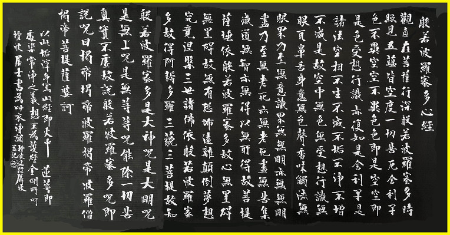

우리는 울음을 터뜨리며 세상에 나와서(생고), 천천히 노쇠하고(노고), 수시로 병마에 고통받다가(병고), 조용히 죽는다(사고). 길고도 짧은 이 인생에서 우리가 좋아하는 사람이나 사물은 늘 오랫동안 함께 있을 수 없고(애별난), 우리가 함께 있는 것은 늘 좋아하지 않는 사람과 사물이다(원증회). 얻고자 하는 것이 한없이 많아서 만족할 수 없고(구부득), 또 일생 동안 갖가지 형태와 색깔, 복잡한 감정과 생각 사이에 얽매여 기복을 겪는다.
어떻게 해야 이런 고통과 액운을 해결할 수 있을까? 어떻게 해야 고통스러운 현실에서 벗어날 수 있을까?
이 때 진정한 해탈은 일상생활속에서 해탈하는 것이다. 인생의 고통과 재앙을 회피하지 않고 적극적으로
맞서서 관찰하고 그것이 허망하다는 것을 깨달아 해탈한다는 것이다.
우리가 이 환상을 꿰뚫어 보려면 반야바라밀다를 이용해야 한다. 반야의 수행은 보시, 지계, 인욕, 정진,
선정, 반야의 방법이 있다. 이를 피안에 도달할 수 있는 여섯 가지 방법이라고 해서 '육바라밀'이라고 불렀다.